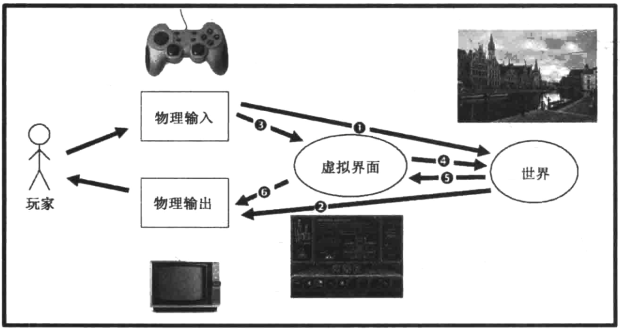

玩家通过界面玩游戏
59号透镜：控制
- 当玩家使用界面时，它是否能尽其责？如果不能，为什么？
- 直观的界面给人以控制感，你的界面是容易还是难以掌握呢？
- 你的玩家是否感觉他们对游戏的结果有着强烈的影响力？如果不是，你如何来改变这种情况？
- 感觉强大=掌控感。你的玩家是否感觉强大？你是否能设法使他们感觉更强大呢？
崩坏

界面越具象，我们越会对内容产生更多的感情羁绊。
60号透镜：物理界面
- 玩家捡起和碰触了什么东西？是否能把这个过程做得更令人愉悦？
- 游戏世界内的动作映射是如何的？这种映射是否可以做得更直接？
- 如果你不能创造一个定制的物理界面，当你将输入映射到游戏世界时你使用哪种隐喻方式？
- 在玩具透镜下，物理界面看上去是什么样的？
- 玩家是怎么看到、听到和触碰游戏世界的？是否有方式可以集成某种物理输入设备使整个世界在玩家的想象中变得更真实？
61号透镜：虚拟界面
- 玩家必须接收哪些光靠观察游戏世界而无法明显获取的信息？
- 玩家何时需要这些信息？一直？还是只是有时？或者只是在每关结尾？
- 这些信息如何以一种不会打扰玩家与游戏世界互动的方式传递给玩家？
- 游戏世界里是否存在某些相比直接互动更容易通过虚拟界面互动的元素（举个例子，比如弹出菜单）？
- 对于我的物理界面来说哪种虚拟界面更适合？比如弹出菜单对于游戏手柄来说是一种很差的匹配。
玩家将他们自己投影进游戏并在某些程度上根本不顾界面就在他眼前这个事实，除非它突然变得让人迷惑。
62号透镜：透明
无论你的界面多美丽，它总是越少越好。
理想的界面对玩家来说是隐形的，它可以使玩家的想象完全沉浸入游戏世界。
- 玩家的欲望是什么？界面是否让玩家做了他们想做的事？
- 这个界面是否足够简单到玩家通过练习后可以不用思考直接使用？
- 新的玩家是否觉得这个界面直观？如果不是，它是否可以用某种方法做到更直观？如果让玩家可以定制操作方式会起到帮助还是伤害的作用？
- 界面是否在所有情况下都工作良好或者是否存在某些情况下，它的行为会使玩家迷惑？
- 在紧张的情况下玩家是否可以继续良好地使用界面，或者他们开始笨拙地摸索如何操控或者遗漏了关键信息？如果是这样，如何改善它？
- 界面是否有任何迷惑玩家的地方？6个界面箭头中的哪一个有这种情况？
- 当玩家使用界面时是否有沉浸感？
63号透镜：反馈
随时承地在你游戏中问自己以下这些问题：
- 在这个时刻玩家应该知道什么？
- 在这个时刻玩家想要知道什么？
- 在这个时刻你想要玩家感受到什么？你如何给出能够创造这种感受的反馈？
- 在这个时刻玩家希望感受到什么？对他们来说是否有机会创造这样一个能使他们获得这种感受的情境？
- 在这个时刻玩家的目标是什么？哪种反馈会帮助他们达到这个目标？
64号透镜：多汁
我们把一套能不断给出反馈的系统称为多汁系统。
- 我的界面对玩家的动作给予持续的反馈了吗？如果没有，为什么没有？
- 二级运动（起源于玩家动作的运动）是由玩家的动作创造的吗？这个二级运动是否有利且有趣？
- 多汁系统以多种方式立刻奖励玩家。当我给予玩家一次奖励时，我同时以多少种方式在奖励他们？我可以找到更多的方式吗？
首要性
“为什么触摸界面是如此的容易理解？”
“因为它们原始。”
我的游戏中哪些部分是原始的，哪些部分又需要更高级的大脑功能？你能使用或涉及越多的大脑原始部分，人们会觉得你的玩法越直观越有力。
65号透镜：原始性
- 我的游戏中哪些部分是如此的原始连动物都可以玩？为什么？
- 我的游戏中哪些部分可以做得更原始？
66号透镜：通道和维度
- 哪些数据需要在玩家这儿往来？
- 哪个数据是最重要的？
- 我可以用哪些通道来传输这些数据？
- 哪些通道对于哪些数据来说最合适？为什么？
- 这些不同的通道上哪些维度是可用的？
- 我该如何使用这些维度？
模式
- 使用尽可能少的模式
- 避免模式叠加
- 制作尽可能不同的差异模式
- 改变屏幕上巨大且可视的东西
- 改变你人物所采取的行动
- 改变屏幕上的数据
- 改变镜头视角
67号透镜：模式
- 我的游戏中需要什么模式？为什么？
- 有些模式是否可以折叠或者合并？
- 是否有些模式重叠了？如果这样，我是否可以把它们放到不同输入频道？
- 当游戏改变模式，玩家怎么知道？游戏是否可以用不止一种方式来传递模式改变的信息？